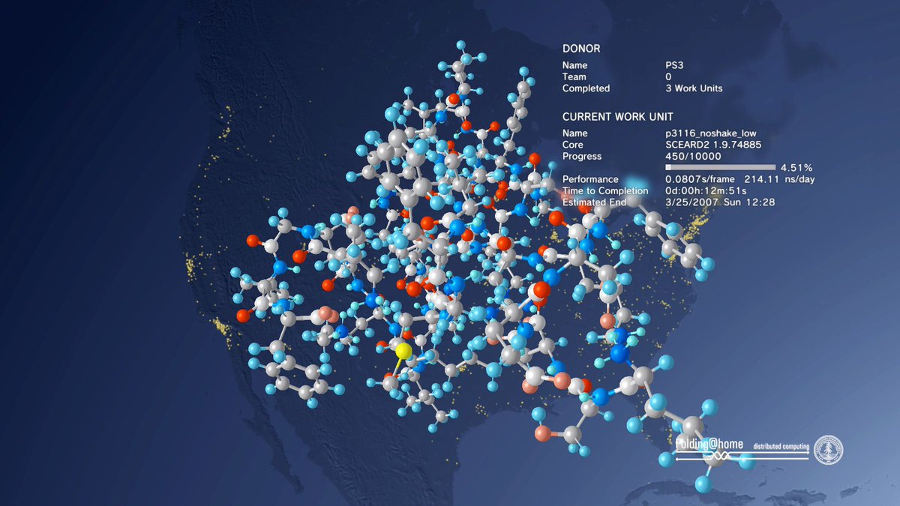

Folding @ Home
Alright. The Struggle.
We need your help! Folding@home is joining researchers around the world working to better understand the 2019 Coronavirus (2019-nCoV) to accelerate the open science effort to develop new life-saving therapies. By downloading Folding@Home, you can donate your unused computational resources to the Folding@home Consortium, where researchers working to advance our understanding of the structures of potential drug targets for 2019-nCoV that could aid in the design of new therapies. The data you help us generate will be quickly and openly disseminated as part of an open science collaboration of multiple laboratories around the world, giving researchers new tools that may unlock new opportunities for developing lifesaving drugs. 2019-nCoV is a close cousin to SARS coronavirus (SARS-CoV), and acts in a similar way. For both coronaviruses, the first step of infection occurs in the lungs, when a protein on the surface of the virus binds to a receptor protein on a lung cell. This viral protein is called the spike protein, depicted in red in the image below, and the receptor is known as ACE2. A therapeutic antibody is a type of protein that can block the viral protein from binding to its receptor, therefore preventing the virus from infecting the lung cell. A therapeutic antibody has already been developed for SARS-CoV, but to develop therapeutic antibodies or small molecules for 2019-nCoV, scientists need to better understand the structure of the viral spike protein and how it binds to the human ACE2 receptor required for viral entry into human cells. Proteins are not stagnant—they wiggle and fold and unfold to take on numerous shapes. We need to study not only one shape of the viral spike protein, but all the ways the protein wiggles and folds into alternative shapes in order to best understand how it interacts with the ACE2 receptor, so that an antibody can be designed. Low-resolution structures of the SARS-CoV spike protein exist and we know the mutations that differ between SARS-CoV and 2019-nCoV. Given this information, we are uniquely positioned to help model the structure of the 2019-nCoV spike protein and identify sites that can be targeted by a therapeutic antibody. We can build computational models that accomplish this goal, but it takes a lot of computing power. This is where you come in! With many computers working towards the same goal, we aim to help develop a therapeutic remedy as quickly as possible. By downloading Folding@home
here and selecting to contribute to “Any Disease”, you can help provide us with the computational power required to tackle this problem. One protein from 2019-nCoV, a protease encoded by the viral RNA, has already been crystallized. Although the 2019-nCoV spike protein of interest has not yet been resolved bound to ACE2, our objective is to use the homologous structure of the SARS-CoV spike protein to identify therapeutic antibody targets.